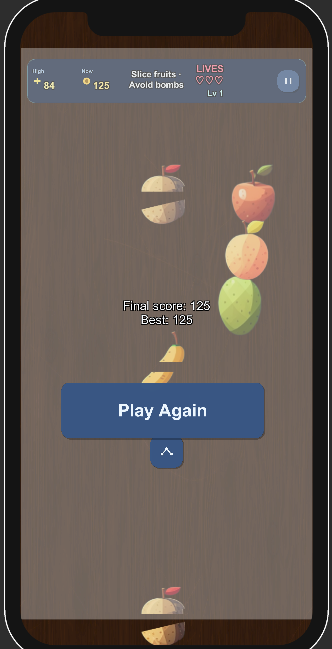

Unity arcade prototype
Fruit Ninja
One clean cut between chaos and calm: fruits arc across the screen, you trace the blade, and every slice is a tiny celebration — until the wrong thing goes splat.

The loop
Gameplay — throw, trace, react
- Launch — Objects spawn on a timer and fly upward with 2D physics: straight up, or tilted left/right for variety.
- The blade — Your touch drives the “cutter” in world space; when it crosses a fruit or bomb, the game resolves the hit.
- Fruit payback — Hit a fruit: swap to a sliced sprite, play audio, disable the collider — visceral “you got it” feedback.
- Bomb roulette — Slice a bomb: explosion VFX, sound, brief beat — then the run ends. One mistake rewinds the fantasy.

Look & sound
Art style — juicy 2D clarity
- UI-first 2D — Bright, readable fruit illustrations on a dark stage: arcade poster energy, not gritty realism.
- Slice frames — Each fruit has a “before / after” sprite: the image flips the instant you connect — cheap to ship, huge payoff.
- Motion as style — Parabolic tosses from
Rigidbody2Dforces sell weight and speed without complex animation. - Punctuation — Stingers on cuts and a bomb burst that fills the screen — sound and particles sell danger and delight.

Keeping score honest
Point system — simple rules, sharp stakes
This build keeps the math ruthless and readable: there is no secret multiplier — only consistency under pressure.
The UI counter ticks up on an event — fruits announce a score change when Damage() fires — so gameplay, audio, and numbers stay in sync without spaghetti references.

Under the hood
Why it feels solid (engineering)
IDamageable— Fruits and bombs share one “something meaningful happened” interface; the cutter does not care which it hit.- Events — Score listens for fruit events; game-over UI listens for bomb events — classes stay loosely coupled.
- Mobile-native input — Touch positions become world coordinates so the blade tracks your finger like the original mobile classic.
Thanks — now go slice something. 🥝

Evidence pack
Menus & HUD (screenshots)
Capture these from the Unity Game window after pressing Play. Runtime UI is built by GameFlowOrchestrator on the Canvas.
- a. Main menu — Start Game, Settings, Leaderboard / High Scores, Help / Tutorial, Exit / Quit.
- b. Gameplay UI — Score, timer + progress bar strip, lives (hearts), Pause.
- c. HUD detail — Points counter (coins/points), level line, power-ups line (demo), mission / objective line.
- d. Pause menu — ESC: Resume, Restart Level, Settings, Exit to Main Menu.
- e. Game over — Final score + best, Play Again, Share score (copies to clipboard), Next level hidden (single-level build).
- f. Settings — Music, Sound / SFX, Master sliders; language cycle; control scheme cycle.
Tip: if the blade felt mobile-only before, desktop builds now follow the mouse while the button is held.
